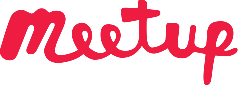

Wer kommt mit auf...
... eine systematische Reise
zu einer besseren Welt?
Schlechter Zustand
Unsere Gesellschaft ist weit voran geschritten, dennoch ist ein Blick von oben mehr als peinlich:
- Hunger, Verschmutzung, niedrige Lebensqualität
- Tierquälerei, Zerstörung der Natur
- tödliche Auseinandersetzungen, Leid
- niedere Arbeiten, zu wenig Erholung
- ungleichmäßig verteilte Bevölkerung
Aussicht
Wir wollen eine Lösung finden, die aus dem derzeitigen technologischen und gesellschaftlichen Standpunkt heraus fließend umgesetzt werden kann.
Wir tendieren zu einer Kombination aus dezentralisierter Planwirtschaft und direkter Demokratie. Der Mittelpunkt des Lebens soll nicht mehr existenzielle Arbeit sein sondern die freie Entfaltung individueller Fähigkeiten, durch die echte Innovation und Kooperation gelebt werden kann. Das Ziel muss globale Zufriedenheit sein, nicht Wirtschaftswachstum. Ein glückliches Leben muss garantiert werden, egal wer man ist oder wo man lebt.
Mögliche Lösung
Viele Vorraussetzungen sind bereits erfüllt: Die notwendige Technologie und die Infrastruktur um solch ein System zu entwickeln und zu verwenden ist größtenteils schon da. Eine Schwerpunktänderung in der Aufgabenverteilung ist auch recht unproblematisch, denn die meiste Arbeit die derzeit verrichtet wird ist bereits überflüssig: Entweder kann sie von Maschinen erledigt werden, ist ineffizient (wegen fehlender Ressourcen, mangelndem Wissen, schlechter Verteilung) oder gar unnütz (weil Produkte auf schnellen Konsum ausgelegt sind).
Wie die Geschichte gezeigt hat, ist ein Systemwechsel jedoch nicht von heute auf morgen realisierbar. Es sind sichere Zwischensysteme notwendig, die jeweils eigenständig funktionieren. Wir werden all das erforschen und entwickeln.
Direkte Demokratie soll durch ein dezentrales Wahlsystem für strukturierte Zusammenhänge und Wünsche gewährleistet werden. Das funktioniert ähnlich wie LiquidFeedback, nur umfassender (in beliebigen Abstraktions-Ebenen) und maschinenlesbar. Anstatt Kompetenzen zu delegieren und somit lokale Experten zu formen werden die eigenen bewertet und die Stimme damit thematisch gewichtet, wodurch eine viel breitere Expertenbasis entsteht. Außerdem gibt es keine statischen Entscheidungen: Alle Eingaben können beliebig aktualisiert werden und werden ständig neu bewertet.
Künstliche Intelligenzen verteilen die dynamischen Daten an den Kern des Systems: Ein verteilter Algorithmus der aus den Zusammenhangsdefinitionen neue Daten erzeugt, miteinander verrechnet und zu höherwertigen Handlungsempfehlungen synthetisiert.
Mach mit!
Wenn du Interesse hast, mit uns an diesem wahnwitzigen Projekt zu arbeiten, schreibe gerne eine unverbindliche E-Mail an info@specios.org.
Oder komme bei einem unserer -Events unserer Gruppe Entwicklung und Umsetzung eines neuen Gesellschafts-Konzepts vorbei.
Im gemeinschaftlich entwickelten 📖 Buch Manifest des Specios findest du weitere Informationen über das Projekt, den Status und seine Ziele.
Womit wir uns befassen:
Theorie
- Probleme unseres Gesellschaftsmodells analysieren.
- Ziele ausarbeiten,
- ohne unbegründete Grundsätze
- oder nicht hinterfragte Ideologien zu verwenden.
- Wege finden und optimieren, die in unserer Gesellschaft anwendbar sind.
Praxis
- Transparente Systeme konstruieren,
um den Verbesserungsprozess zu verwalten und zu steuern. - Methoden definieren,
um Sicherheit und Robustheit zu gewährleisten. - Spielerische Simulationen entwickeln,
um die Menschen aufmerksam zu machen und zu überzeugen.
Ich hoffe, du bist neugierig geworden! Schau vorbei!
First photo by Khunkay
{kind=link}
Second photo by Carlos Perez Couto
{kind=link}
Created by Fabian Sandoval Saldias
Photos licensed under CC BY-SA 3.0.
This project aims at raising attention to serious problems in the core of our society, subsequently fixing them with the help of creative volunteers using state-of-the-art technology.